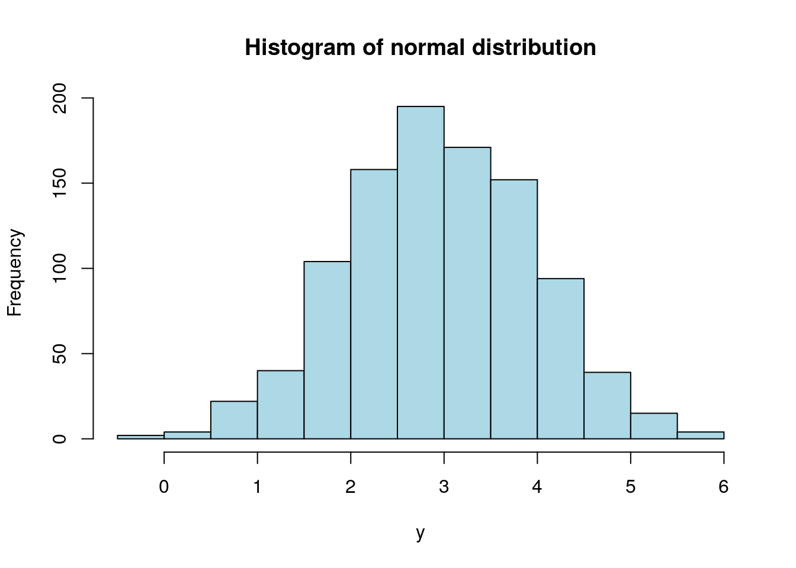
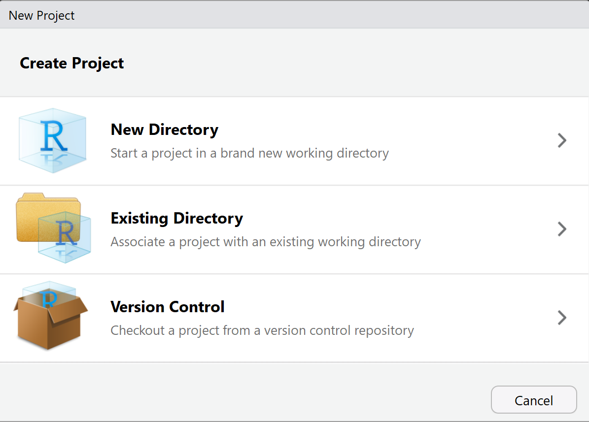

R IDE (Integrated Development Environment): RStudio là phần mềm được thiết kế để việc sử dụng R trở nên dễ dàng hơn. Download tại website: https://www.rstudio.com/
R packages: Tập hợp các lênh, dữ liệu, tài liệu để giải quyết 1 hoặc 1 nhóm các vấn đề trong phân tích. Hiện có hơn 5000 packagé khác nhau trên R. Truy cập website: https://cran.r-project.org/web/packages/
Script: Xem, chỉnh sửa và thực hiện các dòng lệnh trong R
Console: Hiển thị kết quả của câu lệnh từ script hoặc cho phép nhập lệnh và trả kết quả như R-base
Environment & History: Xem lịch sử và các đối tượng (oject) trong R
Plot, packges & Help: Xem kết quả plot, packages và help trong R
Cách tạo một script trong R:
Ctrl + Shift + N
File >> New File >> R Script
Một số lưu ý khi viết lệnh trong R:
Comment: Viết sau ký tự “#”
Thực hiện dòng lệnh: Ctrl + Enter
2.2 Giới thiệu đối tượng cơ bản trong R
Trong R, TẤT CẢ mọi thứ đều được lưu dưới dạng đối tượng (object), ví dụ: biến, mô hình, kết quả, biểu đồ. Tất cả được gọi là đối tượng
#Ví dụ về đối tượng#Đối tượng là 1 sốx<-3#Đối tượng là 1 vector có phân phối chuẩny<-rnorm(1000,3,1)#Đối tượng là 1 biểu đồhist(y, col="lightblue", main ="Histogram of normal distribution")

#Xem thư mục đang làm việc#Get working directorygetwd()
[1] "/home/jovyan/workspace/ds-book-r"
#Thay đổi thư mục làm việc#setwd("Thư mục làm việc") - lưu ý thay "/" bằng "\"#Xem các đối tượng đang làm việcls()
[1] "has_annotations" "x" "y"
#Xóa tất cả các đối tượng#rm = removerm(list=ls())
2.2.1 Câu lệnh
Câu lệnh: Là một yêu cầu do người dùng tương tác với R để yêu cầu R thực hiện một hoặc một vài yêu cầu. Một câu lệnh sẽ có 2 thành phần: - Tên câu lệnh (function) - Biến (Variable)
Cấu trúc của câu lệnh như sau: f(argument1, argument2...) - f: câu lệnh/hàm (function) - argument: Tham số trong hàm
Xem các ví dụ dưới đây
#VÍ DỤ VỀ CÂU LỆNH TRONG R#Các biến trong toán họcexp(1)
[1] 2.718282
cos(-3.14)
[1] -0.9999987
#Các câu lệnh nâng cao khác#Tóm tắt các số liệusummary(mtcars) #
mpg cyl disp hp
Min. :10.40 Min. :4.000 Min. : 71.1 Min. : 52.0
1st Qu.:15.43 1st Qu.:4.000 1st Qu.:120.8 1st Qu.: 96.5
Median :19.20 Median :6.000 Median :196.3 Median :123.0
Mean :20.09 Mean :6.188 Mean :230.7 Mean :146.7
3rd Qu.:22.80 3rd Qu.:8.000 3rd Qu.:326.0 3rd Qu.:180.0
Max. :33.90 Max. :8.000 Max. :472.0 Max. :335.0
drat wt qsec vs
Min. :2.760 Min. :1.513 Min. :14.50 Min. :0.0000
1st Qu.:3.080 1st Qu.:2.581 1st Qu.:16.89 1st Qu.:0.0000
Median :3.695 Median :3.325 Median :17.71 Median :0.0000
Mean :3.597 Mean :3.217 Mean :17.85 Mean :0.4375
3rd Qu.:3.920 3rd Qu.:3.610 3rd Qu.:18.90 3rd Qu.:1.0000
Max. :4.930 Max. :5.424 Max. :22.90 Max. :1.0000
am gear carb
Min. :0.0000 Min. :3.000 Min. :1.000
1st Qu.:0.0000 1st Qu.:3.000 1st Qu.:2.000
Median :0.0000 Median :4.000 Median :2.000
Mean :0.4062 Mean :3.688 Mean :2.812
3rd Qu.:1.0000 3rd Qu.:4.000 3rd Qu.:4.000
Max. :1.0000 Max. :5.000 Max. :8.000
#Xem tên các biến trong 1 bản ghi dữ liệunames(mtcars)
Để tìm thông tin và đọc tài liệu về một hàm, dùng lệnh ? Tên hàm hoặc help(tên hàm). Xem ví dụ:
?meanhelp(mean)
2.2.2 Packages trong R
Packages (thư viện) trong R là một gói các câu lệnh, dữ liệu và tài liệu để xử lý một nhóm các vấn đề về phân tích thống kê. Các packages trong R thường được sử dụng tại hai nguồn:
Github: github.com - lưu trữ các packages đang được phát triển
Một số các packages thường dùng: tidyverse, ggplot2, dplyr, forecast, rpart,
Cách cài đặt packages trong R:
#Cài đặt 1 thư viên# Bước 1: Cài đặt với các packages trong CRANinstall.packages("ggplot2")# Bước 2: Load dữ liệulibrary(ggplot2)# Cài đặt với githubdevtools::install_github("rstudio/rmarkdown")
#Cài đặt nhiều thư viện#Bước 1: Tạo 1 list các thư viện cần dùngpackages<-c("car", "zoo")#Bước 2: Cài đặt nhiều thư viêninstall.packages(packages)#Bước 3: Load nhiều thư viện 1 lúclapply(packages, library, character.only =TRUE)
Đơn giản hơn, ta có thể load thư viện và tự động cài đặt thêm nếu chưa có với package pacman (package manager) (yêu cầu cài đặc package pacman như bình thường trước) như sau:
pacman::p_load(tidyverse, rpart)
Câu lệnh này cho phép thực hiện 2 việc như sau.
Gọi câu lệnh library cho các package cần sử dụng
Nếu chưa có, cài đặt các package và load lại với câu lệnh library
Lưu ý: Các thư viện khi load với pacman không cần để dạng string dạng c("tidyverse", "rpart")
2.3 Cấu trúc dữ liệu cơ bản
2.3.1 Véc-tơ
Véc-tơ là mảng một chiều, trong đó có thể chứa dữ liệu kiểu số, ký tự, …
#Vector chứa dữ liệu kiểu số. c~combinea <-c(1, 2, 3, 4, 5)#Vector chứa dữ liệu kiểu ký tựb <-c("One", "two", "three")#Phép tính logicc <-c(TRUE, FALSE, FALSE)#Kiểu dữ liệu trong 1 vector phải đồng nhấta <-c(1, 2, 3, 4, 5, "x")class(a)
[1] "character"
Factors: Factor là trường hợp đặc biệt của vector, là loại vector thể hiện nhóm dạng nominal (không sắp xếp được như: màu sắc, giới tính) hay ordinal (có thể sắp xếp được như: trình độ - cao đẳng, đại học, thạc sĩ, sở thích - ghét, bình thường, thích)
#class là data frameclass(mtcars$vs)
[1] "numeric"
data <- mtcars#class là factordata$vs <-as.factor(data$vs)class(data$vs)
[1] "factor"
summary(data)
mpg cyl disp hp
Min. :10.40 Min. :4.000 Min. : 71.1 Min. : 52.0
1st Qu.:15.43 1st Qu.:4.000 1st Qu.:120.8 1st Qu.: 96.5
Median :19.20 Median :6.000 Median :196.3 Median :123.0
Mean :20.09 Mean :6.188 Mean :230.7 Mean :146.7
3rd Qu.:22.80 3rd Qu.:8.000 3rd Qu.:326.0 3rd Qu.:180.0
Max. :33.90 Max. :8.000 Max. :472.0 Max. :335.0
drat wt qsec vs am
Min. :2.760 Min. :1.513 Min. :14.50 0:18 Min. :0.0000
1st Qu.:3.080 1st Qu.:2.581 1st Qu.:16.89 1:14 1st Qu.:0.0000
Median :3.695 Median :3.325 Median :17.71 Median :0.0000
Mean :3.597 Mean :3.217 Mean :17.85 Mean :0.4062
3rd Qu.:3.920 3rd Qu.:3.610 3rd Qu.:18.90 3rd Qu.:1.0000
Max. :4.930 Max. :5.424 Max. :22.90 Max. :1.0000
gear carb
Min. :3.000 Min. :1.000
1st Qu.:3.000 1st Qu.:2.000
Median :4.000 Median :2.000
Mean :3.688 Mean :2.812
3rd Qu.:4.000 3rd Qu.:4.000
Max. :5.000 Max. :8.000
#Class là của các đối tượng không phải là số liệuclass(class)
[1] "function"
#class là mô hìnhlmfit <-lm(mpg ~ wt, data = mtcars)class(lmfit)
Data frames là một bản ghi dữ liệu trong R gồm dòng và cột, dòng là biến, cột là quan sát (observation). Trong đó, mỗi dòng (mỗi biến) chứa cùng một kiểu dữ liệu (numeric, character, date,…)
#Tạo vector của biếnpatientID <-c(1, 2, 3, 4)age <-c(25, 34, 28, 52)diabetes <-c("Type1", "Type2", "Type1", "Type1")status <-c("Poor", "Improved", "Excellent", "Poor")#Tạo data frame. Lưu ý: các vector trong data frame cần có cùng độ dàipatientdata <-data.frame(patientID, age, diabetes, status)patientdata
Khi phân tích, ta nên khởi tạo 1 bài phân tích dưới dạng 1 project. Một project là 1 folder có chứa tất cả các file (raw data, script,…) phục vụ cho 1 bài/dự án phân tích. Khi sử dụng dưới dạng project, sẽ giúp giải quyết các vấn đề sau:
Đường dẫn gốc (root path) luôn ở thư mục gốc, do đó không cần phải điều chỉnh lại vị trí thư mục làm viêc
Tăng khả năng tái sử dụng (reproducible) khi làm việc nhóm.
Cách tạo 1 project như sau:
File >> New project >> Đặt tên project và địa chỉ chứa project

Sau khi khởi tạo project, Rstudio sẽ tạo ra 1 file định dạng .Rproj. Khi quay lại project, ta chỉ cần mở trực tiếp file project.
2.5 Một vài lỗi cơ bản khi sử dụng R
#Lỗi viết hoa, viết thường: R phân biệt viết hoa, viết thườnghelp() vs. HELP() vs. Help()#Không có dấu ngoặc kép khi cài đặt packagesinstall.packages("car") vs. install.packages(car)#Sử dụng dấy gạch "\" trong windows cho đường dẫn thay vì "/"setwd("D:/mydata") vs. setwd("D:\mydata")